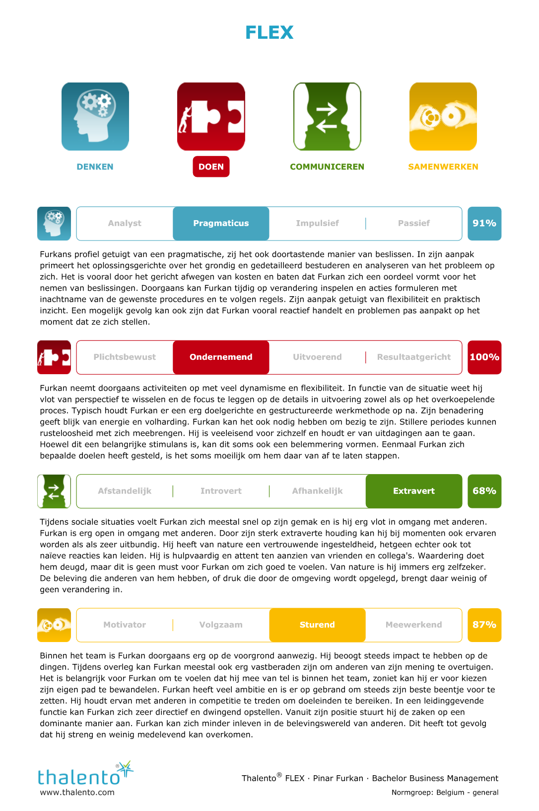

Voordat het research project begon heeft PXL een projectweek georganiseerd. De projectweek was gericht op het bijwonen van verschillende seminaries en het voltooien van taken in een team. We spraken bijvoorbeeld over de soft skills waar we een thalento examen moesten afleggen. Vaak lieten ze zien hoe ze groepstaken beter konden beheren. PXL regelde geleidelijk ook POP-sessies.
De projectweek was een week met heleboel seminaries, pop-sessies en workshops. De bedoeling hiervan was om beter te scoren op persoonlijke ontwikkeling, onderzoeken en ondernemend handelen. Via diverse activiteiten doorheen de week heb ik geleerd om o.a. samen te werken in een team, te reflecteren, professioneel te netwerken, een nieuw project te pitchen, etc. De eerste dag was een verwelkoming en toelichting van de projectweek. Vervolgens werd onze teamindeling bekend gemaakt. Het was een zeer spannend moment, want uiteindelijk moest ik samenwerken met hun voor een project van 12 weken. Daarna hebben we informatie gekregen over hoe we een betere IT’er en teamspeler kunnen worden via zelfreflectie. Daarna hebben we deelgenomen aan een workshop. Tijdens deze workshop hebben we een kernkwadrant gemaakt waarbij we onze kernkwaliteiten, valkuilen en uitdagingen hebben genoteerd. Dankzij deze sessie heb ik en mijn team een betere beeld gekregen over elkaar. Dag 2 begon met een infosessie over I-Talent. Hier hebben we informatie gekregen over de I-Talent Portofolio. Daarna hadden we een seminarie over netwerken op een jobbeurs en LinkedIn profiel. Tijdens deze seminarie hebben we een LinkedIn profiel aangemaakt. Dankzij deze sessie hebben we geleerd hoe belangrijk netwerken is. Netwerken helpt bij het ontwikkelen en verbeteren van vaardigheden. Het is belangrijk dat je op de hoogte blijft van de laatste trends in je branche. Ook moet je zeker de arbeidsmarkt in de gaten houden. Dankzij de LinkedIn profiel heb ik verschillende potentiële mentoren, partners en bedrijven ontmoet. In de namiddag van dag 2 was een jobbeurs georganiseerd. Tijdens deze jobbeurs heb ik verschillende bedrijven ontmoet. Ik heb ze meteen geconnecteerd via LinkedIn. Na de jobbeurs hebben we een seminarie gevolgd over reflecteren volgens de STARRT-methode. Dag 3 begon met een seminarie over onderzoekend handelen. Hier hebben we informatie gekregen over onderzoekend handelen. Dit was een belangrijk onderdeel voor de research project. Na de seminarie was er ook een workshop over dit onderdeel georganiseerd. Tijdens deze workshop moesten we een mogelijke project bedenken voor een probleem. Deze bedenking moesten we einde van de dag pitchen. We hadden verschillende ideeën, maar uiteindelijk hadden we besloten om een project te starten voor mensen die beperking hebben. Een soort van browser die speciaal was ontwikkeld voor mensen met een beperking. In de namiddag hebben we deze idee gepitcht, maar helaas hebben we niet gewonnen. Dag 4 begon met een seminarie ‘What The Hack’. De seminarie gaf een introductie en voorbereiding voor de hackaton ‘WhatTheHack’. Tijdens deze seminarie kregen we informatie over 24h timelines, challanges, jury members, coaching, ... Daarna hebben we een klein gedeelte van Agile Development toegepast. In de namiddag hebben we onze portofolio en presentatie uitgewerkt. Dag 5 begon met een presentatie over de projectweek portofolio en vervolgens startte de project. De project ging over een applicatie voor Limino. Limino is een centrum voor basiseducatie. Limino voert oefening uit met Powerpoint wat totaal niet optimaal was. Als studenten van AON moesten we een applicatie bouwen. Met de applicatie zouden de cursisten oefeningen maken met behulp van audiofragmenten.
Het was een zeer leuke ervaring om verschillende activiteiten uit te voeren met een team die ik pas heb ontmoet. Daarnaast was het ook zeer leerrijk. Ik heb mijn sterke en zwakke punten beter leren kennen. Dit heeft mij uiteindelijk een betere IT’er gemaakt. De seminaries zelf waren erg nuttig en terwijl luisteren zonder pauzes niet altijd interessant was. De seminaries waren sterk gericht op zowel het project als het bedrijfsleven. Dit is een meerwaarde voor de studenten die volgend jaar afstuderen. Het was een zeer drukke week met veel informatie. Tijdens de verschillende seminaries heb ik de belang van netwerken geleerd. Netwerken gaat niet alleen over het verhandelen van informatie, maar dient ook als een manier om langdurige relaties op te bouwen met wederzijdse voordelen. Jobbeurs was een ideale opportuniteit om dit uit te voeren. Het was een zeer goede introductie voordat we echt begonnen aan de project. Ik denk dat het niet was gelukt zonder de projectweek. Tijdens de researchproject hebben we zo veel mogelijk onderdelen toegepast wat we hadden geleerd tijdens de projectweek. Zelf had ik wel wat meer mogen opletten. Ik verloor vaak mijn aandacht, waardoor ik fundamentele zaken miste tijdens te presentaties en seminaries. Uiteindelijk had ik hulp gekregen van mijn teamgenoten over de zaken die ik had gemist. Ik heb deze activiteit gekozen voor mijn portfolio omdat dit het keerpunt was om mijn stage te lopen in het buitenland. PXL moet zeker doorgaan om andere studenten een keerpunt te geven voor een buitenlandse stage. Mijn stage op internationaal niveau was een geweldige ervaring en ik kan het zeker aanbevelen aan andere studenten.